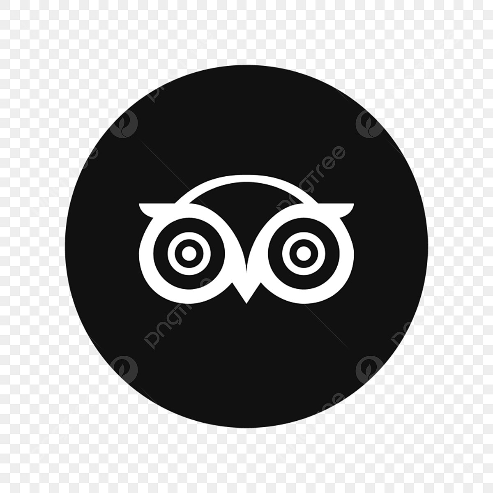

專業的
我專注於經濟問題的深入研究，並致力於提供創新的解決方案，以應對當前的挑戰。我的目標是通過分析和洞察，幫助客戶實現可持續的增長和成功。
150
完成的專案
5
年的經驗
98
滿意的客戶


一個熱愛學習和分享的投資顧問，專注於幫助客戶實現財務自由。

「勇者懂得如何在風險中尋找機會，在機會中管理風險。」
—— 王聖嘉
我擁有超過5年的財務分析和投資顧問經驗，專注於為客戶提供量身定制的財務解決方案。我熱衷於研究市場趨勢，並致力於幫助客戶實現他們的財務目標。
在我的職業生涯中，我曾為多家知名企業提供財務諮詢服務，並成功幫助客戶提高投資回報率。我相信，通過深入的市場分析和個性化的財務規劃，可以實現更高的財務自由。
如果你對我的工作感興趣，或者有任何財務相關的問題，歡迎隨時聯繫我。我期待著與你合作，共同實現財務目標。
理財證照
具備專業的理財規劃知識，能夠為客戶提供全面的財務建議。
財經博士/金融分析師
擁有深厚的財經學術背景，能夠進行深入的市場分析和投資建議。

證券投資顧問
精通證券市場，能夠為客戶提供專業的投資建議和風險管理策略。
獲得理財證照，開始專業的財務規劃和投資顧問生涯。
完成財經博士學位，深入研究金融市場和投資策略。
加入城方投信成為高級證券投資顧問，提供投資建議和風險管理服務。
財務規劃
提供專業的財務規劃服務，幫助客戶實現財務目標。
投資策略
制定個性化的投資策略，確保資產的穩定增長。
財務規劃
提供專業的財務規劃服務，幫助客戶實現財務目標。
風險管理
評估投資風險，制定風險控制策略，保障客戶資產安全。
財務規劃
提供專業的財務規劃服務，幫助客戶實現財務目標。